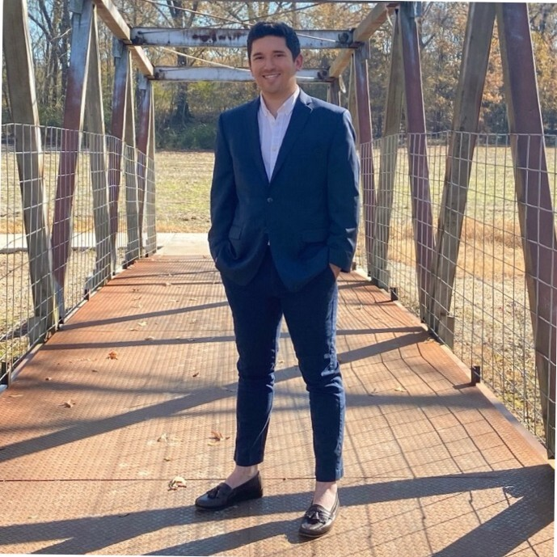

Welcome to my page! My name is Stephen Chavez. I am a recent MBA graduate living in the Greater Memphis area. I have taken a few classes for coding and programming but am mostly self taught. I am creating this website as a frontend project to continue to grow my coding/programming skills.
I received my B.A. in Public Policy Leadership and began the life of campaign management before getting thrown into multiple roles as a Data Director I realized how much I enjoyed certain things such as reporting, documenting, and analytics so much that I went to get my MBA and focused the analytical side of things. Since, I have began a new career path in tech starting as a Systems Analyst at DHL Supply Chain, now serving as a Professional Business systems analyst at Corelogic. I am looking at to continue pursuing my goals, growing my knowledge, and dreaming big.
Please feel free to check out my other pages to see my portfolio and how you can reach out to connect! Have a great day!!
